| - 2 cups | |
| - 1.5 -2 pounds | |
| - 2 large heads | |
| - 1.5 packs | |
| - 1 head | |
| - 1 pack (15 g) | |
| - to taste |
DESCRIPTION:
| Some words before pilaf making. | |
| 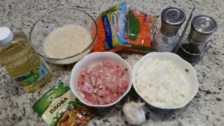 |
I prefer ready sliced carrot. Just brcause it faster. But if you want you can cut it by youself. Spices... Again, usually I buy some ready spices for pilaf in Russian store but you have to know what spices go in there, so as not to depend on whether there is a Russian store nearby or not. :) Mandatory spices: coriander, sweet red pepper, black pepper and zira. And optional , but I really like to add them: saffron, turmeric and barberry. Everything should be put to your taste. Okay, you can start. :) |
| 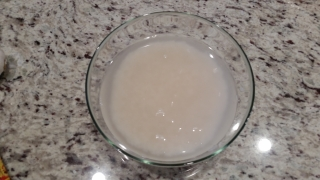 | 1. Wash the rice in cold water, pour cold water (water should be 1 cm above the rice) and set aside for now. |
| 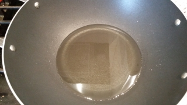 | 2. Heat a cup of butter in a deep pan on medium heat. (To understand that the oil warmed up you need to dip a wooden spoon into the oil. If the oil is heated, bubbles will appear around the spoon.) |
| 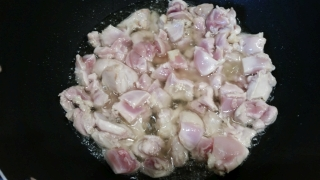 | 3. Add the chicken pieces to the butter and mix. | 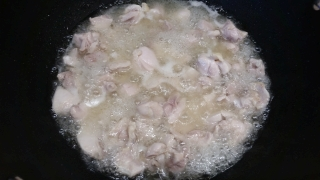 | The oil will become cloudy. | 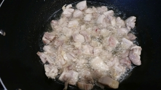 | Fry the chicken, stirring occasionally, until the oil is clear again. |
| 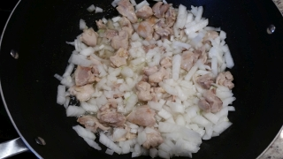 | 4. Add chopped onions and stir all together. Fry for about 5 minutes. |
| 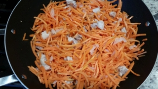 | 5. Add chopped carrots and fry for about 10 minutes, stirring occasionaly. |
| 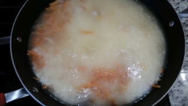 | 6. Spread chicken with carrots and onions with a spatula and lay the rice on top straight with water and smooth with a spatula. Again, the water should be 1 cm above the level of rice. So you may have to pour water. DO NOT MIX !!! |
| 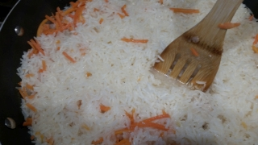 | 7. When the water boils, reduce the heat (somewhere between medium and low) and wait until all the water disappears. |
| 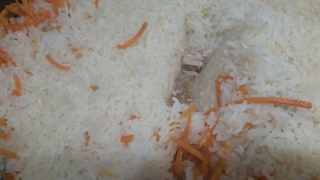 | 8. Periodically poke pilaf with a wooden spatula to check if there is still water. |
| 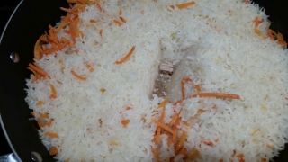 | 9. Wash garlic (whole head) in cold water. When all the water disappears, add spices and salt to the pilaf, mix everything well. |
| 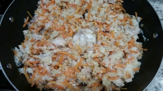 | 10. Stick the garlic head in the middle of the pilaf, cover the pilaf with the lid, turn off the heat and let stand for 10-15 minutes. | 11. Enjoy your meal! |
{kind=link}
{kind=link}
{kind=link}
{kind=link}
{kind=link}
{kind=link}
{kind=link}
{kind=link}
{kind=link}
{kind=link}
{kind=link}
{kind=link}
{kind=link}